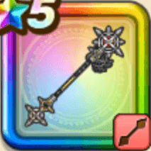

小悪魔セティアのロッド
攻略班 9.0点 / あしばらい黄泉送り・ゴス小悪魔のキッスサキュバスウィンクゴスロリ僧侶の祈りかっこいいよチャッピー！
くわしい特徴
【レベル別習得スキル】 Lv1【スパスタ】攻撃力+5 Lv10あしばらい（消費MP：4）敵1体に威力120%の体技ダメージを与えたまに転ばせる Lv15黄泉送り・ゴス（消費MP：30）敵1体にゾンビ系なら威力850%、それ以外の系統には500%の体技ダメージを与える Lv20小悪魔のキッス（消費MP：43）敵1体に威力800%の体技ダメージを与え、たまにこうげき力やしゅび力を下げる Lv30サキュバスウィンク（消費MP：55）敵全体に威力600%の体技ダメージを与え、まれに眠りにさそう。与えたダメージに応じて仲間全員のMPを回復する(最大40回復) Lv35ゾンビ系へのダメージ+5% Lv40悪魔系へのダメージ+5% Lv45攻撃力+12 Lv50ゴスロリ僧侶の祈り（消費MP：最大MPの2%）戦闘開始時に「じぶん」の特殊効果「ゾンビ系へのダメージ+」「あくま系へのダメージ+」の効果値を2倍にする(効果2ターン) Lv50かっこいいよチャッピー！（消費MP：5）戦闘開始時に「じぶん」の斬撃・体技ダメージが、ガードやみかわしされなくなる効果を付与する(効果2ターン) 【限界突破スキル】 1凸スキルの斬撃・体技ダメージ+7% 2凸スキルの斬撃・体技ダメージ+7% 3凸スキルの斬撃・体技ダメージ+7% 4凸スキルの斬撃・体技ダメージ+7%